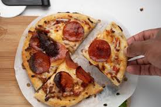

Air Fryer Pizza

This air fryer pizza is one of my favorites. Not only is it super easy
and super quick to make, but it's a lot healthy than regular pizza (and a lot cheaper too!
Ingredients:
- Naan bread (shaped like a circle)
- Cheese of choice
- Pizza sauce
- Pepperoni, sausage, or any other toppings you see fit!
Steps:
- Preheat air fryer to 400 degrees. Set the air fryer timer to 8 minutes.
- While fryer is preheating, spread pizza sauce onto naan bread.
- Sprinkle cheese on top of sauce.
- Top with any toppings you see fit. Be careful with lighter toppings like pepperoni -- they may go flying!
I find that either covering them with cheese or pressing them down into the sauce/bread helps.
- Load into basket or onto tray and let cook.
- Let cool and feel your connection to mother Italia.